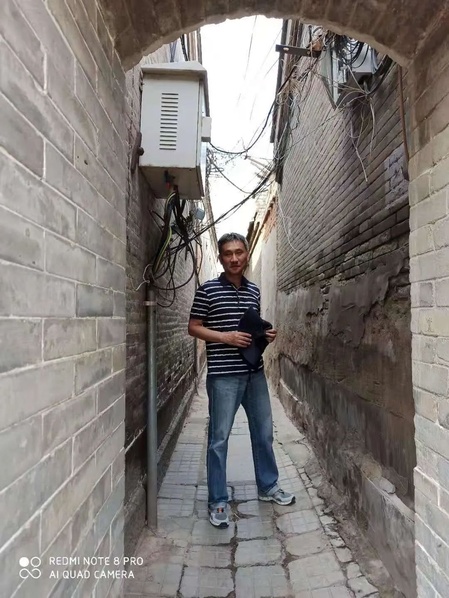
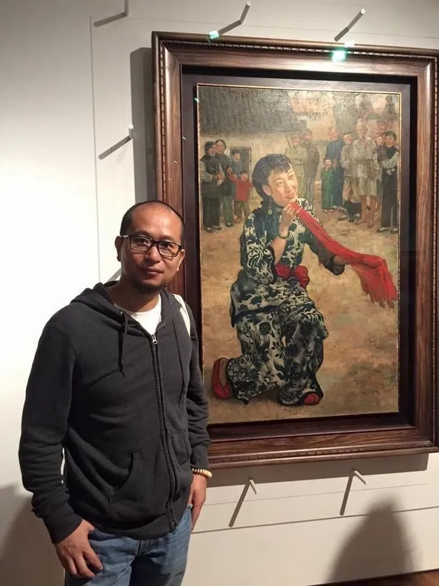

收录于合集 #会议速递 20个
会议主题：跨学科视野中的唐宋变革
会议时间：2021.8.22（周日）北京时间 21:00-23:30
会议链接：
腾讯会议：736 900 658；密码：666666
“唐宋变革论”与唐宋变革：一个史学命题的方法论问题
陆扬 北京大学历史系暨中国古代史研究中心教授
中晚唐的藩镇：一个难以被纳入唐宋变革论的议题
仇鹿鸣 复旦大学历史系教授
唐宋变革与财政国家
刘光临 岭南大学历史系教授
唐宋变革与经济转型
张泰苏 耶鲁大学法学院/历史系教授；北大法学院全球教席成员
唐宋变革中地方精英的转型
许曼 塔夫茨大学历史系副教授
从被动到主动：海洋亚洲中的唐宋变革
杨斌 澳门大学历史系教授
略论思想与文学之唐宋转型
陈丹丹 纽约州立大学副教授、河南大学文学院兼职讲座教授
超越唐宋变革论？来自历史社会科学的启发
罗祎楠 北京大学政府管理学院 助理教授
一个历史社会学者对唐宋变革论的疑问
张杨 美利坚大学国际服务学院 助理教授
召集/主持： 陈丹丹 纽约州立大学副教授、河南大学文学院兼职讲座教授
腾讯会议主持： 张德文 Randolph-Macon College历史系副教授
主讲人与主持人介绍：
陆扬 ，北京大学历史系暨中国古代史研究中心长聘教授，普林斯顿大学博士，毕业后先后执教于普林斯顿大学、哈佛大学和堪萨斯大学。主要研究领域为隋唐五代史、中国中古佛教文化史、现代史学理论。代表作有《清流文化与唐帝国》（北京大学出版社，2016）、Early Medieval China: A Sourcebook (《早期中国中古文献导读》，与Wendy Swartz, Robert Campany, Jessey Choo合编，哥伦比亚大学出版社，2014) 。
仇鹿鸣 ，复旦大学历史系教授，复旦大学博士。出版专著《魏晋之际的政治权力与家族网络》、《长安与河北之间：中晚唐的政治与文化》，参与整理修订本《旧五代史》、《新五代史》，先后在《历史研究》、《中国史研究》、《文史》、《中华文史论丛》等学术刊物上发表论文四十余篇，主要研究兴趣为中古中国的国家与社会、士族政治、石刻文献等。
刘光临 ，岭南大学历史系教授，哈佛大学博士。主要研究方向包括：新儒家思想与传统中国政治经济学、历史经济分析、中国军事历史、中国传统社会政治经济等。先后在Economic History Review、《台大历史学报》《中国经济史研究》《清华大学学报（人文社会科学版）》等国际和国内核心期刊发表论文10余篇。主要专著包括《中国市场经济，1000－1500 AD》（纽约州立大学出版社，2015年）。

张泰苏 , 耶鲁大学法学院暨历史系教授，北京大学法学院全球教席成员，耶鲁大学学士、法律博士、历史学博士。2018-2019年曾任中国法律与历史国际学会会长。主要研究方向为比较法律史与比较经济史、私法理论以及当代中国法律与政治。专著《儒家法律和经济学：前工业化时期中英家族与产权制度比较》（The Laws and Economics of Confucianism: Kinship and Property in Pre-Industrial China and England，剑桥大学出版社2017年出版）荣获美国社会科学历史学会颁发的会长奖以及麦克米伦国际与地区研究中心颁发的盖迪斯- 史密斯图书奖，中译本即出。第二部著作《清代财政国家的意识形态基础》即出。
许曼 ，塔夫茨大学历史系副教授。北京大学历史系本科及硕士，哥伦比亚大学东亚系博士。致力于中国中古史研究，尤其关注女性与地方精英的历史。其研究涉及知识史，艺术史，文学史，考古学，文化史和性别研究等多个领域。专著Crossing the Gate: Women’s Everyday Lives in Song Fujian (960-1279) 由纽约州立大学出版社2016年出版，中译本《跨越门闾：宋代福建女性的日常生活》由上海古籍出版社2019年发行。哈佛大学费正清中国研究中心性别研究年度工作坊召集人之一。目前正参与《剑桥儒学史》的编撰工作。
杨斌 ，澳门大学历史系教授，西泠印社社员。其博士论文Between Winds and Clouds: the Making of Yunnan (季风之北，彩云之南：云南的形成）获得美国历史学会2004年古滕堡电子出版奖（Gutenberg- E Prize），由哥伦比亚大学出版社2008年出版，其繁体中文版（《流动的疆域：全球视野下的云南与中国》已在台北出版。第二本英文专著Cowrie Shells and Cowrie Money: A Global History （Routledge: 2019）获得哈佛燕京学社出版资助，其简体中文版即将在北京出版。英文学术论文见于国际著名期刊 Bulletin of the History of Medicine (《医疗史公报》)、Journal of Women’s History（《妇女史期刊》）、Journal of World History （《世界史期刊》）、The China Quarterly（《中国季刊》）以及 Modern Asian Studies （《近代亚洲研究》），对中国史、世界史、海洋史、科技医疗史以及艺术史颇有兴趣。

陈丹丹 ，哈佛大学博士，现为纽约州立大学法明代尔分校历史政治与地理系副教授，河南大学文学院兼职讲座教授。2014年起任中国法律与历史国际学会财务长、中国留美历史学会秘书长。研究领域为中国文学、文化与思想史，尤致力于以跨学科路径探索历史转折期之中西对话与古今之争。在海内外中英文学术期刊发表论文十数篇，获中国留美历史学会2016年度学术优秀奖。
罗祎楠 ，哈佛大学东亚语言与文明系博士。北京大学政府管理学院助理教授。长期致力于将中国历史同政治学、社会学的理论、方法相结合，解释中国治理的内生性发展历程，说明其在政治理论与社会理论中的意义。在《中国社会科学》、《社会》、《读书》、《史学月刊》、Modern China 、Journal of Song Yuan Studies等刊物发表论文多篇。
张杨 ，美利坚大学国际服务学院助理教授，芝加哥大学社会学博士。研究领域包括历史社会学、政治社会学、抗争政治、比较帝国和社会科学哲学。张杨正在完成一部关于清代帝国、国家与族群- 宗教动员的书稿，相关文章刊于American Journal of Sociology等期刊。他也在比较和互动的视角下研究中国的帝国、国家与官僚制的长时段演变。
张德文 ，Randolph-Macon College历史系副教授。
编辑：康张城